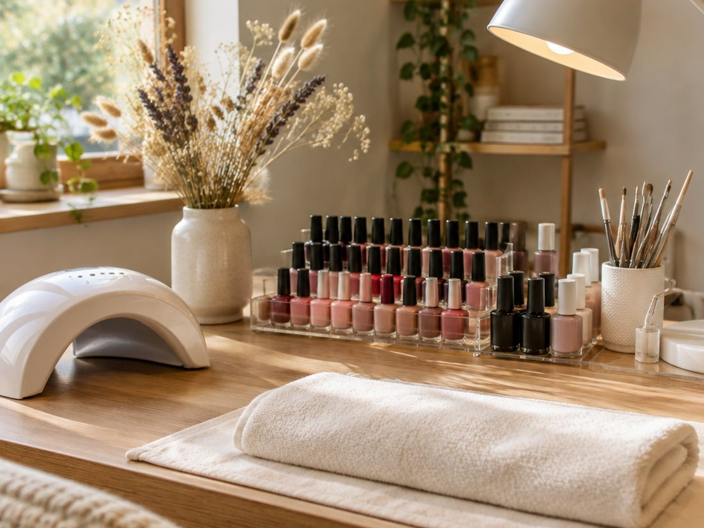

Визит занимает около двух часов: спокойно, с примеркой формы и обсуждением цвета.
Пишете в WhatsApp: что нужно и когда удобно. Подтверждаю время и отправляю адрес.
Прикладываем формы, смотрим на вашу руку. Выбираем длину, которая не мешает жить.
Маникюр, моделирование гелем, цвет. Не спешу: лучше на час дольше, чем скол через неделю.
Рассказываю, как носить и чем пользоваться. Возврат на коррекцию — через 3–4 недели.
Простые правила, которые реально продлевают носку.

Напишите в WhatsApp — подскажу ближайшее окно и подберу время под вас.